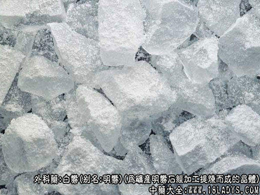

白矾为少常用中药。始载《神农本草经》列为上品，原名“矾石”。
别名：明矾。
来源：白矾为矿产明矾石或其它铅矿石经加工提炼而成的晶体。
产地：主产于浙江、安徽、山西、湖北等省。
性状鉴别：呈不规则的结晶体，块大小不一。白色，透明或半透明。表面平滑或凸凹不平，常附有一层白霜。质硬脆。
易砸脆，碎断面有玻璃样光泽。气微，味酸涩。
以块整，色白，透明者为佳。
主要成分：含硫酸铝钾。
药理作用：
（1）收敛消炎。明矾可从细胞中吸收水分，使细胞发生脱水收缩，减少腺体分泌，减少炎症渗出物。
又可与血清蛋白结合成难溶于水的蛋白化合物而沉淀，使组织或创面呈现干燥，因而有收敛燥湿的作用，并有助于消炎。
（2）止泻。明矾可抑制小肠粘膜分泌而起止泻作用。
（3）止血。明矾可使局部小血管收缩，并可使血液凝固，因而有局部止血作用。
（4）涌吐祛痰。明矾内服后能刺激胃粘膜，发生反射性呕吐，促进痰液排出。
炮制：生用。
性味：酸，寒。
归经：入脾经。
功能：清热，消痰，止血，燥湿，杀虫，解毒。
主治：痰涎壅盛，咽喉肿痛，癫痫，黄疸，吐血，白带，痢疾泻泄等症。
临床应用：
（1）用于治疗白带，子宫脱垂，白带经久不止，引起局部皮肤瘙痒和湿疹者，可用明矾加蛇床子煎水外洗；子宫脱垂用10%明矾溶液作宫颈周围注射，有一定效果。
（2）用于止血，牙龈、鼻粘膜，或皮肤损伤出血，可用枯矾末或溶液作局部外敷以止血。
（3）用于治疗五官科的某些炎症。如眼结膜炎可用1%明矾溶液洗眼；鼻咽部炎症也用明矾末吹入鼻咽部，或用0.5%-1%。
明矾液作含濑剂。慢性肥厚性鼻炎可用10%明矾液，作鼻甲粘膜下注射；中耳炎，外耳道炎和耳部湿疹，可用枯矾30%，冰片3g，研细末作外用，均有一定疗效；痈肿疮疖、溃疡创面分泌物较多者，可用2%明矾液作外洗或湿敷。
（4）用于治疗皮肤湿疹、皮炎（亚急性期）。可用明矾配五月艾、百部等煎水外洗，方如五百明洗剂。
（5）用于治疗内痔。对于内痔出血或单纯内痔，可用20%明矾液作局部注射，每次用1-3毫升，有止血和使内痔脱落的作用。
（6）用于祛痰开闭。对于喉痹、风痰不下，咽喉部痰涎壅盛，患者有烦躁不安，出现狂乱，抽搐者，前人有用枯矾、牙皂为末吹喷，或用白金丸（方见郁金项下）内服以祛痰开窍。
用量：外用适量。内服0.9-3g。
使用注意：虚证患者不宜内服。
处方举例：
五百明洗剂；五月艾、百部、明矾、毛射香各15g，煎水外洗。
附：枯矾
白矾煅制而成。形似海绵状结块，色白，不透明，体轻而松脆。多用于外科之疮疡。口舌生疮，目疾等症。